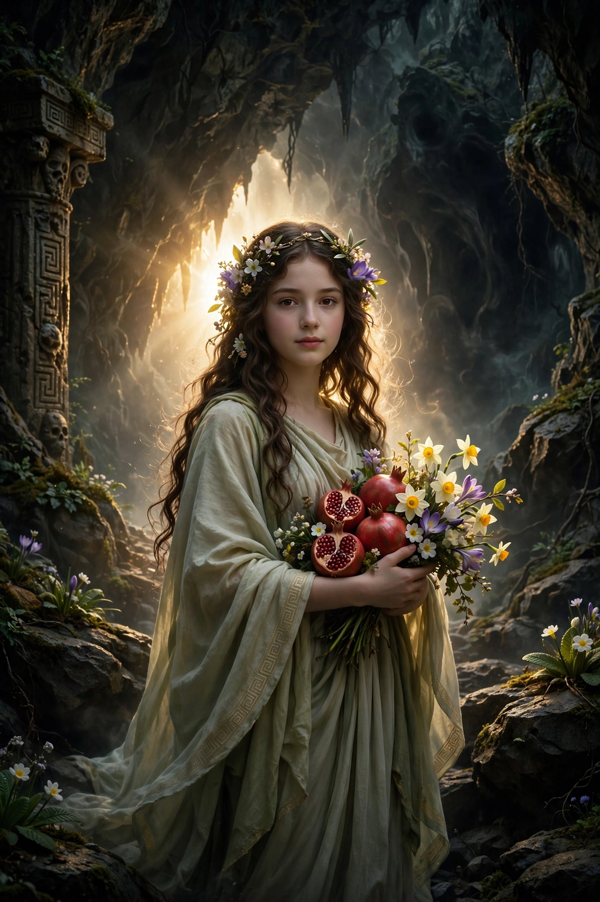

From Wikipedia, the free encyclopedia
| Persephone | |
|---|---|
| Affiliation | Greek mythology; queen of the underworld, goddess of spring |
| Parents | Zeus and Demeter |
| Spouse | Hades |
| Also called | Kore ('the Maiden') |
| Sacred sites | Eleusis (the Mysteries); Locri; Sicily in tradition |

Persephone is the Greek goddess of spring and queen of the underworld, daughter of Demeter and Zeus, whose annual descent to and return from the realm of Hades explained the cycle of the seasons in the myth told by the Homeric Hymn to Demeter. As Kore, "the Maiden", she is the girl gathering flowers; as Persephone, dread queen of the dead, she receives the shades beside her husband. Her cult at Eleusis, where the Mysteries promised initiates a better hope in death, made her story the emotional centre of one of antiquity's most famous religions.
Hades, with Zeus's prior consent, desired Persephone and carried her off as she gathered flowers (in the Hymn, a miraculous narcissus) in the plain of Nysa: the earth opened, his chariot burst forth, and she cried out as he bore her down. Demeter, searching with torches for nine days and learning the truth from Helios, withdrew in grief and anger to Eleusis and blighted the earth — no seed sprouted — until Zeus, fearing for gods and men, ordered Hades to send her back. But Hades had given her pomegranate seeds to eat, and having tasted the food of the dead she could not wholly leave: the compromise fixed her year — a portion (a third, in the Hymn; half, in later tellings) below with Hades, the rest above with her mother, whose joy and grief at her coming and going drive the seasons.
In the underworld Persephone is no mere captive: the Odyssey calls her dread and august, she dispatches the shades to Odysseus, and in Orphic tradition she is mother of Zagreus-Dionysus and a power whom suppliants approach with care. To her belong the pomegranate, the torch, and the narcissus and poppy. The Eleusinian Mysteries, enacted at Demeter's sanctuary, re-enacted the search and return in secret rites kept for nearly two thousand years.
Greek mythology · Hades · Demeter · Athena · Heracles